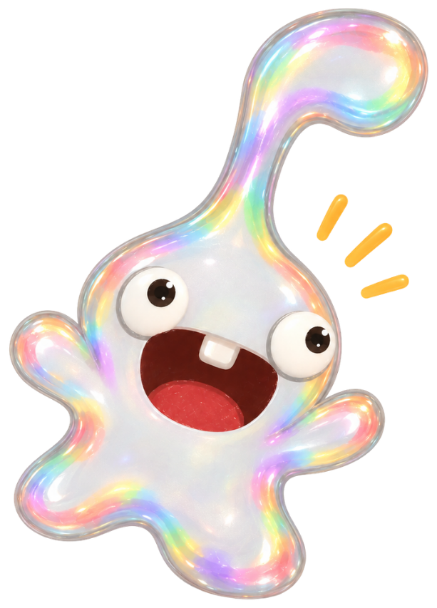

第15屆 東吳第3哩 單車環島活動
你會是哪一型環島隊友？
跟著第3哩出發，
遇見環島路上的另一個自己。
如果真的和一群人一起踏上環島的路，面對長坡、逆風、下雨、疲累，還有一路同行的夥伴，你會成為隊伍裡的哪一種人？
用 8 題情境題，看看屬於你的環島角色。
沒有標準答案，跟著第一直覺選就好！
一起練習，一起準備，一起出發。
本測驗為趣味體驗性質，非正式心理測驗，僅供參考。
你的環島角色是
關鍵字
你的四種環島傾向
依照這次作答呈現出的特質傾向
最終角色會綜合你的整體作答結果判定。

來自第3哩團隊的小提醒 🚲
不管你是哪一種環島角色
都要記得：安全和團隊合作永遠擺在最前面
一起出發，也要一起平安回來
想更了解第3哩嗎？
最新活動資訊都會放在 IG。想加入我們、一起準備環島，可以從這裡開始！
現在還沒準備好也沒關係，環島本來就不是一天練成的。從練習開始，一起把「我可以嗎？」慢慢騎成「我們出發吧！」
本測驗為趣味體驗性質，沒有標準答案，也不是正式心理測驗，結果僅供參考。